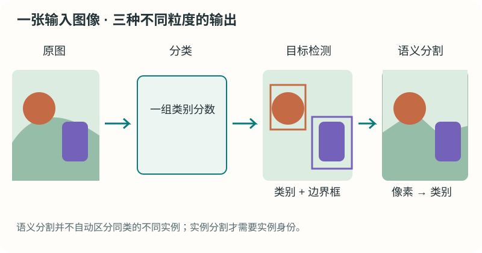
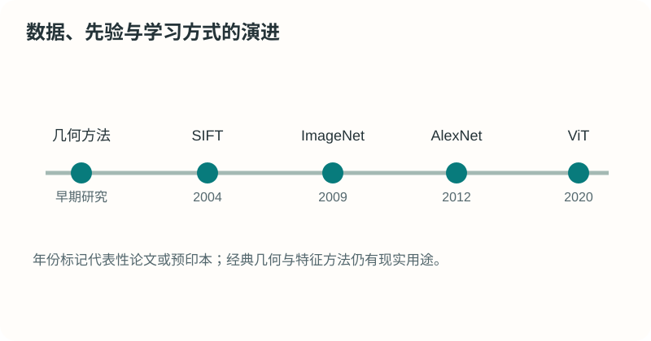

CHAPTER 01 · FOUNDATIONS
从像素到视觉理解
一张图像怎么从数值变成有意义的预测？从分类、检测、分割三个问题，建立计算机视觉的最小概念地图。
同一张照片，为什么需要不同的预测？
设想一张十字路口的照片：如果只问“有没有汽车”，整张图的分类已经足够；如果要统计车辆位置，则必须为每辆汽车给出边界框；如果要规划可通行区域，还需要将道路、路缘、行人逐像素区分。这三个问题虽然共用图像，却具有不同的输出空间、标注方式与损失函数。

目标检测的矩形框并不能描述物体轮廓；语义分割也不天然提供实例编号。对于同类别的多个人，实例分割需要额外预测归属。这些任务边界比记住模型名称更重要。
图像是数值数组，而不是物体本身
一幅 RGB 图像常表示为 H×W×3 张量。高度 H 是行数，宽度 W 是列数，三个颜色通道在常见 8 位编码中取 0 至 255 的整数。图像解码、色彩空间转换、线性化和归一化可能改变数值语义；不能将“数组里有三个数”直接等同于物理光强。
I 为图像张量，最后一维是通道。深度学习库也常使用 NCHW 布局。
拍摄过程还受光照、反射、遮挡、视角和镜头的影响。同一辆车可能在白天与夜晚呈现完全不同的像素，而两个纹理相似的区域未必是同类物体。因此视觉系统所学的不是简单的像素查表，而是对任务有用的稳定表征。
什么改变了计算机视觉的方法？
早期视觉研究大量依赖成像几何、特征匹配和显式优化。SIFT 在 2004 年系统化了尺度空间关键点与局部描述子；ImageNet 2009 年的论文展示了大规模分层标注图像资源；AlexNet 2012 年将深度卷积网络、GPU 训练与大规模数据的组合推向主流；ViT 的 2020 年预印本又讨论了不依赖传统卷积结构的图像分类路径。这是代表节点，而不是“旧方法被彻底淘汰”的时间表。

实际系统经常组合学习网络与传统几何，例如从神经网络产生特征，再使用相机模型估计空间关系。评价一个方法需要在同样数据、分辨率、算力和训练规则下进行比较。
预测是否正确，需要明确协议
分类常用 top-1 accuracy；检测往往综合类别、候选框与 IoU 阈值，报告 AP/mAP；分割则经常按类别统计像素 IoU。这些指标不能脱离协议比较：不同检测基准的 mAP 对 IoU 阈值的定义可能不同，类别分布不同也会影响总体准确率。
A 与 B 是预测和真实的像素集合；分母为非空并集的大小。
训练集和测试集要尽量避免同一场景的相近视频帧泄漏。即使测试准确率较高，也不能证明模型在未见过的城市、光照或设备上鲁棒。
可执行实验：自己算一次 IoU
此例把两个二值掩码当作像素集合，交集包含 2 个像素，并集包含 4 个像素。这个数值是教学构造数据，不是论文实测指标。
import numpy as np
pred = np.array([[1, 1, 0], [0, 1, 0]], dtype=bool)
truth = np.array([[1, 0, 0], [0, 1, 1]], dtype=bool)
assert binary_iou(pred, truth) == 0.5
empty = np.zeros((2, 3), dtype=bool)
assert binary_iou(empty, empty) is None
print("toy IoU:", binary_iou(pred, truth), "| empty:", binary_iou(empty, empty))真实数据如果出现某个类别的预测与标签都为空，需要按基准协议确定是忽略、记作 1，还是另作处理。上面的函数返回 None 表示“该样本没有可定义的并集”，而不是替 benchmark 选择统计策略。真实评估必须使用对应数据集的官方脚本。
检查理解：检测一定能得到轮廓吗？
不能。常规目标检测输出矩形框，分割才对应像素区域；实例分割还要区分同类的各个物体。
与后续章节的连接：图像数值与颜色处理见 第 02 章；像素级任务的分割评估会在 第 20 章、第 21 章继续展开；检测框的 IoU 匹配见 第 15 章。
来源与延伸阅读
历史事实与术语以以下原始资料为准；教学数据与图解为独立构造，不作为论文实验结论。